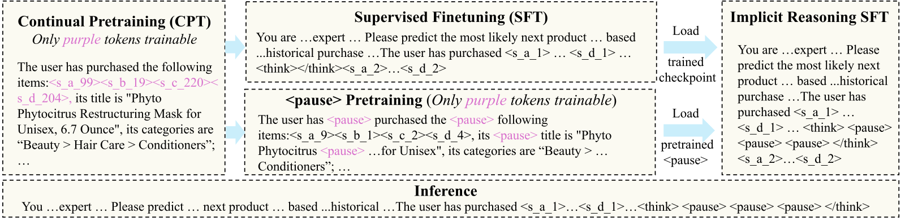
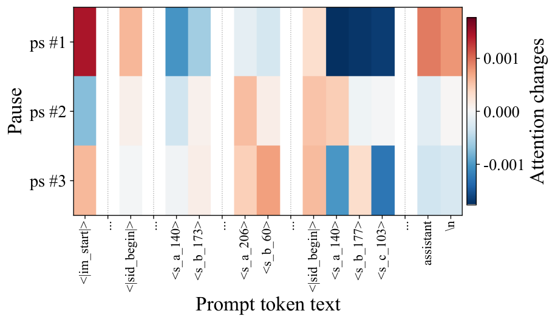

分享 SHARE
做 LLM 生成式推荐的团队值得读，尤其是正在考虑“先让模型写推理再出 SID”的团队。这篇论文先把显式推理那条多阶段训练流水线拆开逐段测了一遍，结论很直接：在 Semantic ID（SID）上做推荐，只做 CoT SFT 不但不涨，反而比普通的 next-item SFT 差。作者给出的替代方案 PauseRec 很轻：在用户历史和目标 SID 之间塞 5 个可训练的 <pause> token，不写任何推理文字，只用最终的 SID 预测损失去训练它们。在 Amazon Toys 上，PauseRec 的 Hit@5 从 next-item SFT 的 0.0565 提到 0.0615，也高于带 RL 后训练的 OneRec-Think（0.0579）；训练 GPU 时从 305.62 小时降到 107.34 小时，单条推理从 0.2043 秒降到 0.0586 秒。我对这篇的诊断部分评价高于方法部分：方法的收益绝对值很小，而且和 SFT 基线的对比里混进了别的变量，后面会具体说。
它到底在解决什么问题？
LLM 做生成式推荐的标准做法是：给每个物品分配一串 SID（比如 4 个特殊 token），把这些 token 加进 LLM 词表，再让 LLM 读用户历史、逐个生成下一个物品的 SID。大家选 LLM 当骨干，是想用上它预训练时学到的世界知识，比如“买了洗发水和护发素的人，接下来可能买造型喷雾”。问题在于，LLM 的知识是通过自然语言调出来的，而 SID 是预训练时从没见过的 token。模型要从一串 SID 读出用户兴趣，再生成另一串 SID，中间没有一步走在它熟悉的语言上。
现有方案（OneRec-Think 等）的思路是把语言这一步补回来，通常分四段训练：
| 阶段 | 训练数据 | 更新什么 | 目的 |
|---|---|---|---|
| CPT | SID 与物品标题、类目交替出现的文本 | 只更新 SID token 的 embedding | 让 SID 和物品含义挂钩 |
| next-item SFT | 用户历史 → 下一个物品的 SID | 全模型 | 学会推荐 |
| CoT SFT | 用户历史 → 一段推理文字 → 下一个物品的 SID | 全模型 | 学会先写推理再推荐 |
| RL 后训练 | 用推荐是否命中当奖励 | 全模型 | 进一步优化推荐结果 |
用一个示意场景贯穿全文：某用户买过 Axe 洗发水、Pantene 护发素、Nexxus 造型喷雾，下一件真实购买是 Dove 发根蓬松喷雾（这个例子来自论文附录 F.2 的注意力分析样本）。显式推理流水线希望模型先写出“该用户持续购买护发和造型产品，下一步可能买造型喷雾”，再据此生成 Dove 喷雾的 SID。论文要回答的是：这四段训练里，哪段真正起作用，为什么。
显式推理卡在哪：四个诊断实验
第一个实验测 CPT 之后模型到底认不认识 SID。作者用 Qwen3-1.7B 在 Amazon Beauty 上做 2 轮 CPT，然后给一个 SID，让模型写出这个物品的标题和类目，按完全匹配计分。Amazon 的类目是三级路径，比如“Beauty > Hair Care > Conditioners”。结果是粗类目几乎全对，一级类目准确率在三个数据集上都在 97.8% 以上；二级类目掉到 11.85% 到 40.49%；完整三级类目不到 7.2%，标题几乎为 0。这说明 CPT 只让模型知道一个 SID 大概属于哪个大类，离“认识这件商品”还很远。
第二个实验直接测 CoT SFT 有没有用。作者在 CPT + SFT 之后，用 7 种推理文字分别做 CoT SFT：两种模板，比如“The user is likely to buy items in the {目标类目} category”；Gemini 3.1 Flash-Lite 和 Pro 写的自由推理；从多条推理里挑一条的两种拒绝采样；以及要求推理里必须引用 SID 的受限格式。结果见下表，7 种全部低于不写推理的 next-item SFT。
| 方法（Amazon Beauty） | Hit@5 | NDCG@5 |
|---|---|---|
| next-item SFT（不写推理） | 0.0533 | 0.0381 |
| 类目模板 | 0.0492 | 0.0343 |
| 扩展模板 | 0.0425 | 0.0282 |
| Gemini 3.1 Flash-Lite 自由推理 | 0.0520 | 0.0361 |
| Gemini 3.1 Pro 自由推理 | 0.0422 | 0.0276 |
| 按目标 SID 的 logit 挑选的推理 | 0.0526 | 0.0362 |
| 由 Gemini Pro 打分挑选的推理 | 0.0524 | 0.0367 |
| 受限格式推理 | 0.0449 | 0.0307 |
最好的一种也只有 0.0526，仍比基线低；最差的 Gemini Pro 版本掉了 20% 以上。有意思的是，更强的老师模型写的推理反而更差。这说明推理文字写得好不好，和它能不能帮模型选对 SID，是两回事。以往报告 CoT 有收益的工作，收益都是在 CoT SFT 之后再做一轮可验证奖励 RL 才出现的。
第三个实验看 CoT SFT 之后，模型还能不能用语言把知识说出来。作者把推荐 CoT SFT 后的模型拿去做 MMLU、HellaSwag、PIQA、ARC-Challenge 四个选择题基准，用两种方式计分：一种让模型生成答案字母，看文字是否匹配；另一种直接比较 A/B/C/D 四个字母的 logit，取最大的那个。MMLU 上，基座模型 57.60，文字匹配掉到 0.10，比较 logit 仍有 55.20。附录给出了原因：模型在 <think> 里通常只写一句“The user is likely to answer C”这样的短句（字母随题目变化），然后在 </think> 后面直接接一串 SID，27,094 条样本里有 27,074 条在 </think> 之后输出的是 SID。所以 知识还在 logit 里，但模型已经不会用语言把答案说出来，生成一律滑向 SID。
第四个实验测推理文字的脆弱性。作者在推理时把训练用的标准推理文字原样喂给 CoT SFT 模型，Hit@5 是 0.1165，比不写推理的基线 0.0533 高一倍多。但这段推理本身就含有目标类目，相当于提前告诉了模型答案的一部分。删掉其中的目标类目，Hit@5 掉到 0.0540；只随机删 5 个词，Hit@5 掉 18.5%；随机加 5 个噪声词，NDCG@5 掉 18.4%。这说明模型依赖的是推理文字里的几个关键词，推理时自己写出来的文字只要稍有偏差，效果就大打折扣。

作者还把文本 token 和 SID token 的 embedding 用 PCA 投到二维（上图）。CPT 之后两类 token 已经明显分开，SFT 和 CoT SFT 只让差距略微扩大。附录用一个定理说明这件事为什么重要：SID 之间谁的 logit 更高，只取决于隐状态在“区分 SID”那些方向上的分量。推理文字带来的隐状态变化如果大多落在别的方向上，就只能把目标 SID 和竞争 SID 的 logit 差改变很少。目标 SID 原本落后得多，推理文字就无法把它推到前面。我的看法是，这个定理只是把“如果两个空间耦合弱”换成了一个上界，并没有测出真实模型里的耦合系数有多小，PCA 图本身也只是二维投影，证据偏弱。
PauseRec 怎么做
PauseRec 保留了 CPT 和 next-item SFT，去掉 CoT SFT 和 RL，换成一个新 token 和两段训练。

<pause> 预训练（只训<pause> 本身）；右边把两个结果合并，在 <think> 和 </think> 之间放 <pause> 做隐式推理 SFT；底部是推理时的输入" loading="lazy" decoding="async"><pause> 预训练（只训 <pause> 本身）；右边把两个结果合并，在 <think> 和 </think> 之间放 <pause> 做隐式推理 SFT；底部是推理时的输入为什么需要单独一个 <pause> token？显式推理的问题是要求模型把中间想法写成文字，而上面的诊断说明这一步既难又脆弱。<pause> 的作用是在生成 SID 之前多给模型几个位置：每个位置都会经过完整的 Transformer 层，产生新的隐状态，后面生成 SID 时，attention 可以读到这些隐状态。它们不需要被解码成文字，训练时也不要求它们像什么，只要求最后的 SID 生成对。
第一步是初始化。作者把 <pause> 的 embedding 设成 CPT 后整个词表所有 token embedding 的平均值，只加极小的扰动（方差为 embedding 方差的 倍）。词表里既有文本 token 也有 SID token，所以平均值落在两类 token 之间，是个中性的起点。
第二步是 <pause> 预训练。从 CPT 的结果出发，在 CPT 语料里随机插入 <pause>，插入数量占每条序列长度的 10%，例如“The user has <pause> purchased the following items……its title is "Phyto <pause> <pause> Phytocitrus……"”。训练目标和 CPT 一样，是在这份语料上做下一个 token 预测。这一步只更新 <pause> 这一个 embedding，其他参数全部冻结，所以梯度只能通过“插进 <pause> 之后，后面的文字和 SID 预测得更准还是更差”来改它。这样做是为了让 <pause> 学会出现在文字和 SID 交界处，又不破坏 CPT 学到的 SID embedding。这一步和 next-item SFT 从同一个 CPT 结果并行出发，互不影响。
第三步是隐式推理 SFT。把预训练好的 <pause> embedding 装进 next-item SFT 的结果里，训练样本改成“用户历史 + <think> + 5 个 <pause> + </think> + 目标 SID”，损失只算目标 SID 的 token：
这里 是带 5 个 <pause> 的输入， 是目标 SID 的第 个 token， 是 SID 长度。<pause> 位置不计损失，这一步训练全模型参数。直觉是：模型不必模仿任何老师写的推理，只在这 5 个位置能帮到 SID 预测时才会利用它们。推理时同样放 5 个 <pause>，然后直接解码 SID，一个推理字都不生成。
拿示意场景说，显式推理要先生成几十个字的推理文字，再生成 Dove 喷雾的 4 个 SID token；PauseRec 的输入后面固定跟 5 个 <pause>，模型对它们只做一次前向计算，然后开始生成 SID。生成的 token 数从“几十个推理 token + 4 个 SID token”变成“4 个 SID token”，推理时间因此大幅缩短。

<pause> 位置的 attention 变化：红色表示比上一个<pause> 关注更多，蓝色表示更少。靠前的 <pause> 广泛关注指令和历史的边界，靠后的集中到少数几件历史商品上" loading="lazy" decoding="async"><pause> 位置的 attention 变化：红色表示比上一个 <pause> 关注更多，蓝色表示更少。靠前的 <pause> 广泛关注指令和历史的边界，靠后的集中到少数几件历史商品上作者用上图解释 <pause> 在做什么。这条样本的目标正是 Dove 发根蓬松喷雾，靠后的 <pause> 对历史里一件“头发、皮肤、指甲”保健软糖的关注明显上升，作者认为这件商品和目标同属护发意图。这只是一条样本的可视化，可以帮助理解，不能当成证据。
实验结果说明了什么
主实验用 Amazon Beauty、Sports、Toys 三个数据集，过滤掉交互少于 5 次的用户和物品，每个用户最后一次交互做测试，倒数第二次做验证。骨干都是 Qwen3-1.7B，PauseRec 用 5 个 <pause>。对比对象包括 SASRec、HSTU、TIGER 等传统和生成式模型，作者复现的 next-item SFT，带显式推理和 RL 的 OneRec-Think，以及另一种隐式推理方法 ReaRec。
| 方法 | Beauty H@5 | Beauty N@10 | Sports H@5 | Sports N@10 | Toys H@5 | Toys N@10 |
|---|---|---|---|---|---|---|
| HSTU | 0.0424 | 0.0353 | 0.0268 | 0.0226 | 0.0366 | 0.0309 |
| TIGER | 0.0405 | 0.0337 | 0.0215 | 0.0179 | 0.0337 | 0.0276 |
| ReaRec | 0.0450 | 0.0344 | 0.0214 | 0.0154 | 0.0523 | 0.0376 |
| next-item SFT | 0.0533 | 0.0445 | 0.0287 | 0.0237 | 0.0565 | 0.0471 |
| OneRec-Think | 0.0563 | 0.0471 | 0.0288 | 0.0239 | 0.0579 | 0.0482 |
| PauseRec | 0.0568 | 0.0467 | 0.0294 | 0.0245 | 0.0615 | 0.0509 |
PauseRec 在 12 个指标上全部高于 next-item SFT，在其中 10 个上高于 OneRec-Think，Beauty 的 Hit@10 和 NDCG@10 两项 OneRec-Think 更高。这说明不写推理、不做 RL，也能拿到和显式推理加 RL 相当的效果。但要看清差距的量级：Hit@5 上 PauseRec 和 OneRec-Think 在 Beauty 是 0.0568 对 0.0563，在 Sports 是 0.0294 对 0.0288，最大的差距在 Toys，相对提升 6.22%。论文没有给多次运行的方差，这么小的差距是否稳定，表里看不出来。
效率上，Beauty 上 PauseRec 训练用了 107.34 GPU 小时，OneRec-Think 用了 305.62 小时，少了约 65%；单条推理 0.0586 秒对 0.2043 秒，约快 3.5 倍。附录测了不同推理文字长度下的延迟，长一些的模板和老师推理要 0.32 到 0.42 秒，是 PauseRec 的 5.5 到 7.1 倍。测试条件是单张 A100、Hugging Face generate、batch 16，没有用 vLLM。这说明 省下的主要是 RL 训练和推理文字的生成，推理文字越长，PauseRec 的优势越大。
两个消融值得一起看。初始化方式上，用预训练过的 <pause> 在 Beauty 上 Hit@5 为 0.0568，只用文本 token 均值初始化是 0.0559，只用 SID token 均值是 0.0548，按新增特殊 token 的默认方式初始化是 0.0560。<pause> 数量上，Beauty 的 Hit@5 在 k=1、3、5、10 时分别是 0.0562、0.0559、0.0568、0.0555。也就是说，不管换哪种初始化、放几个 <pause>，Hit@5 都落在 0.0548 到 0.0568 之间，全都比 next-item SFT 的 0.0533 高。预训练初始化在这几种里最好，只放 1 个 <pause> 也已有 0.0562。现有消融说不清总提升主要来自哪一部分，下一节会说为什么。
我认为它的局限
第一，和 next-item SFT 的对比不是只差 <pause> 一个变量。按附录 F.1 的训练样本，next-item SFT 的输入只列历史物品的 SID，隐式推理 SFT 的输入还附带每件物品的标题和类目；而且隐式推理 SFT 是在 next-item SFT 的结果上再训 5 轮。上面的消融显示只放 1 个 <pause> 也有 0.0562，所以 0.0533 到 0.0568 这段提升里，有多少来自标题类目和额外训练，论文的实验分不开。最该补的对照是：同样带标题和类目、同样多训 5 轮、但不放 <pause>。
第二，“CoT SFT 削弱了语言能力”这条诊断，证据主要是格式坍缩。MMLU 文字匹配从 57.60 掉到 0.10，原因是模型通常只写一句“The user is likely to answer C”这样的短句（字母会变），然后输出 SID。这说明推荐 CoT SFT 把输出格式训死了，至于知识是否“难以用语言表达”，这组实验只能说明一部分。
第三，收益很小，评估面也窄。三个数据集都是 Amazon 评论数据，物品数在 1.2 万到 1.8 万之间；收益最大的 Toys 上 Hit@5 也只是从 0.0565 到 0.0615，没有方差，没有线上实验。骨干只试了 1.7B 一个规模，大模型上 CoT 是否同样失效，这篇没有回答。
一个推荐团队可以怎么试
- 如果已经在做 LLM + SID 的生成式推荐，先跑那个缺失的对照：在 next-item SFT 的输入里加上物品标题和类目，再多训几轮，看 Hit@5 能涨多少。这一步几乎零成本，能判断 PauseRec 的收益有多少是
<pause>本身带来的。 - 在上一步的基础上加 1 到 5 个
<pause>，用论文的初始化和只训<pause>的预训练。如果离线指标只比上一步多涨千分之一的量级，就不值得为它改推理链路。 - 如果团队在评估显式 CoT + RL 方案，先用 Table 2 的方法做一次 CoT SFT 对照。CoT SFT 单独跑不过 next-item SFT 时，要把 RL 的成本算清楚：论文里 OneRec-Think 训练用了 305.62 GPU 小时，PauseRec 是 107.34 小时。
- 上线前测延迟时，用自己的推理框架和 batch 设置重测，论文的 3.5 倍是在 Hugging Face generate 上测的。
结论和评价
最关键的启发是：在 SID 上做推荐时，让模型先用语言写推理并不会自动调用它的世界知识，模型更需要的是在生成 SID 前多几步计算。
| 维度 | 评价 |
|---|---|
| 问题重要性 | 高。CoT 和 RL 正在被大量搬进生成式推荐，这篇第一次系统地测了每一段训练是否必要 |
| 方法创新性 | 中低。pause token 和隐式推理在 LLM 领域已有先例，这里主要是给它加了一个桥接文本和 SID 的预训练 |
| 实验证据 | 中。诊断实验设计清楚；主结果差距很小、没有方差，和 SFT 的对比混入了输入格式和训练轮数两个变量 |
| 工程成本 | 低。只多一个 token 和两段短训练，推理只多 5 个位置的前向计算，不用 RL |
| 是否值得尝试 | 值得先做便宜的对照。显式 CoT + RL 方案的团队尤其应该先复现 Table 2 |
读完这篇，你觉得
夜读鸮记下了，谢谢你的反馈。
点一下即可，无需登录；再点一次撤回。只统计匿名次数，不记录你是谁。
讨论
欢迎补充实验细节、复现经验或不同看法。需 GitHub 登录。
正在加载讨论…